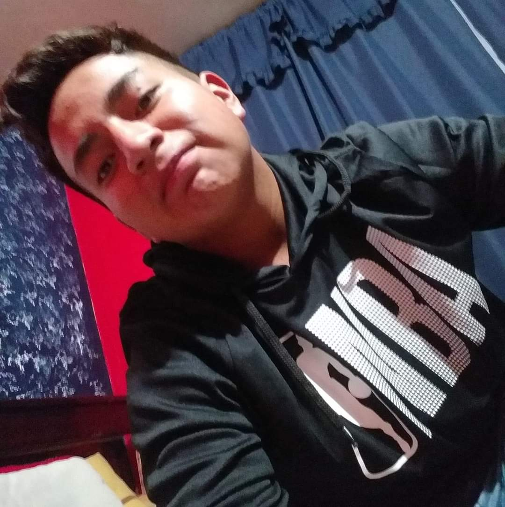

<ion-header class="bg-white bg-opacity-80 backdrop-blur-sm" [translucent]="true">
  <ion-toolbar>
    <ion-title class="text-xl font-bold text-center text-gray-800">
      Imagen
    </ion-title>
  </ion-toolbar>
</ion-header>

<ion-content [fullscreen]="true" class="flex flex-col items-center justify-center bg-gray-100">
  <ion-toolbar class="">
    <ion-title class="text-lg font-semibold text-center">Este soy yo :D</ion-title>
  </ion-toolbar>
  <main class="grid items-center p-5 bg-white shadow-md rounded-lg place-content-center" >
    <a href="https://github.com/Dustin1904/PruebBimestral.git" class="mt-4 mx-auto">
       <br>
    </a>
    <div>
      <a href="https://github.com/Dustin1904/PruebBimestral.git">
        <button class="bg-blue-500 text-white font-semibold py-2 px-4 rounded shadow hover:bg-blue-600 transition duration-200">
          Ir al repositorio de este proyecto
        </button>
      </a>
    </div>
  </main>
</ion-content>
